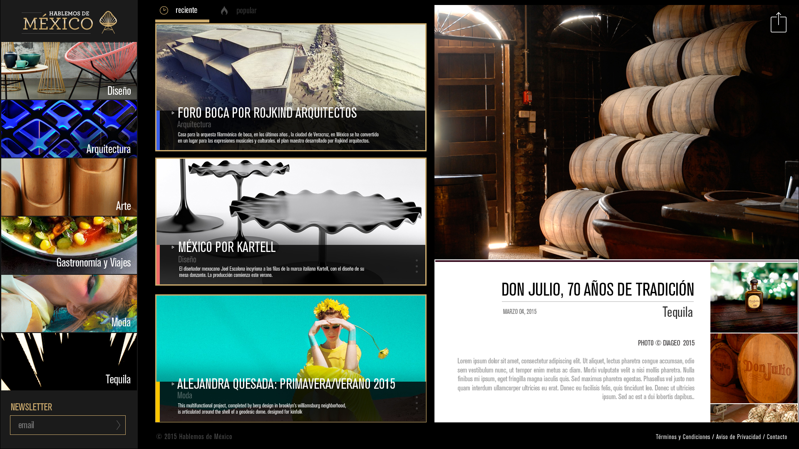
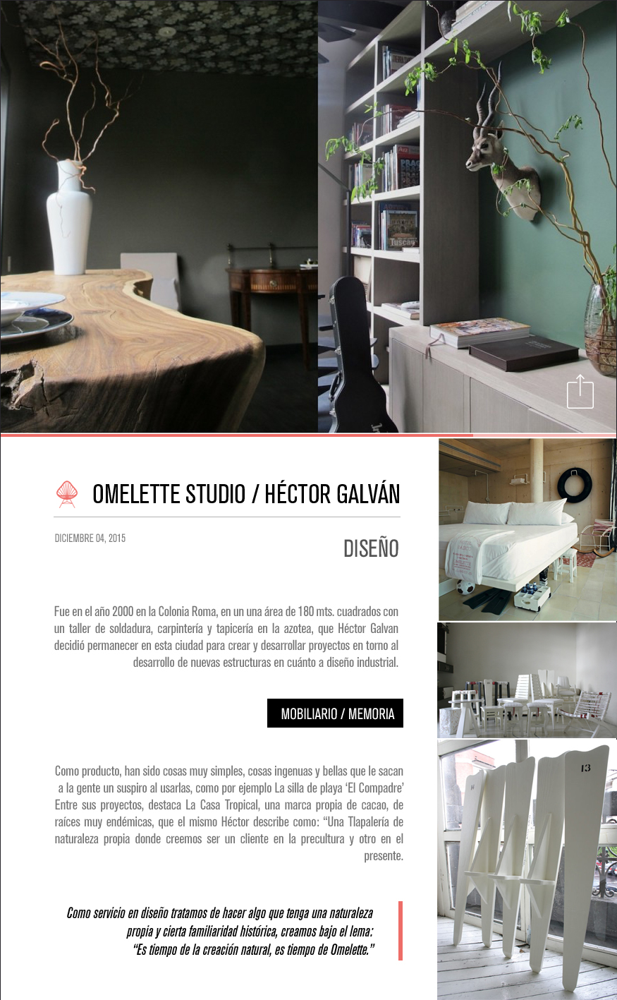

<div class="ajax-get" id="p-scroll">
	<div class="ajax-container">
		<hgroup>
			<h3>Hablemos de México</h3>
			<h4>Front-End, Maquetado, WordPress, Funciones PHP, Funciones JS</h4>
			<h5><a href="http://hablemos.mx/" target="_blank">http://hablemos.mx/</a></h5>
		</hgroup>
		<div class="content">
			<p>Diseñado/Desarrollado en KTBO por el equipo de Desarrollo para DIAGEO. Participé en la creación del tema de WordPress del sitio, la maquetación y creación de funciones necesarias tanto en PHP como en JS. Se utilizó SublimeText 3 como IDE y Prepros para procesar LESS.</p>
			
			
		</div>
	</div>
</div>